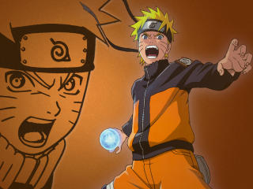
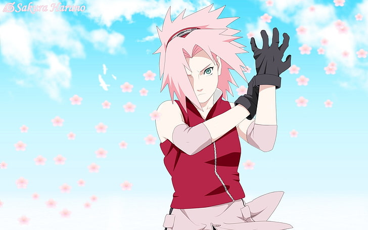

A prodigious ninja from the Uchiha clan, skilled in fire-style jutsu and Sharingan abilities. His quest for revenge against his brother Itachi leads him down a dark path.

The determined and energetic ninja with dreams of becoming Hokage. He wields the powerful Nine-Tails Fox (Kurama) and specializes in shadow clones and Rasengan techniques.

Initially the weakest of the team, she later becomes a powerful medical-nin under Tsunade’s guidance, developing immense strength and healing abilities.